Sequoia Desktop
Application web complete de gestion de patients pour cliniques et pharmacies. Systeme de consultation, gestion des antecedents, prescriptions, examens cliniques et tableau de bord. Authentification securisee et conformite RGPD.
Contexte
- Stage MD Creations, Montpellier
- Avril — juin 2025 (2 mois)
- Equipe : 1 dev senior (Tuteur), 1 designer
- Remplacement des systemes papier
Hard Skills mobilises
- Developpement Front-End complet
- Base de donnees MySQL relationnelle
- Back-End PHP, sessions securisees
- Protection XSS, CSRF, injections SQL
- Conformite RGPD — donnees medicales
- Maquettage Figma, responsive design
Resultats obtenus
- Deploye beta ( à venir ) — 1 cliniques pilotes
- Saisie reduite de 75%
- Satisfaction utilisateur : 90%
- Zero incident de securite
- Chargement < 2s avec 300+ patients
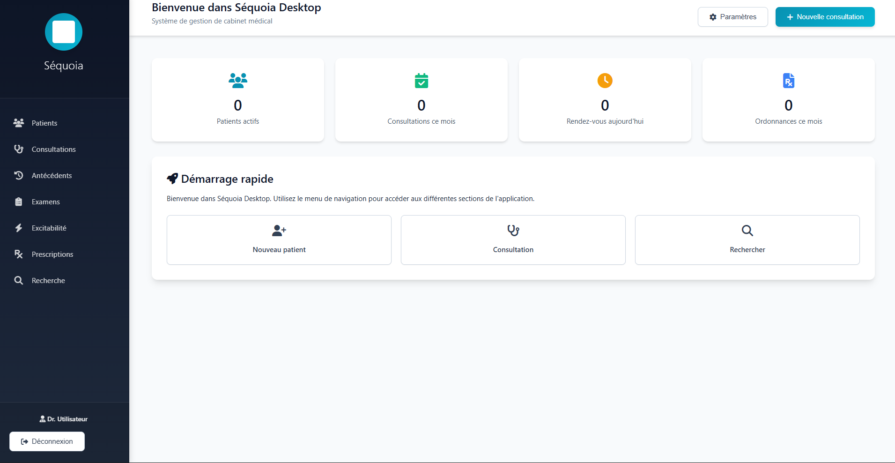
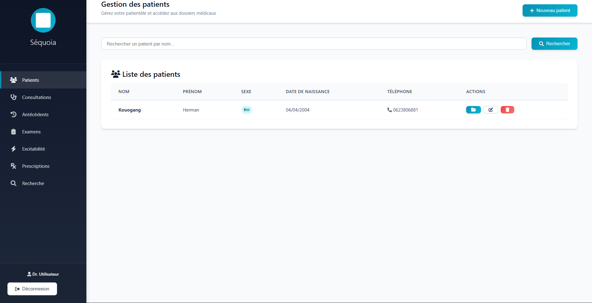
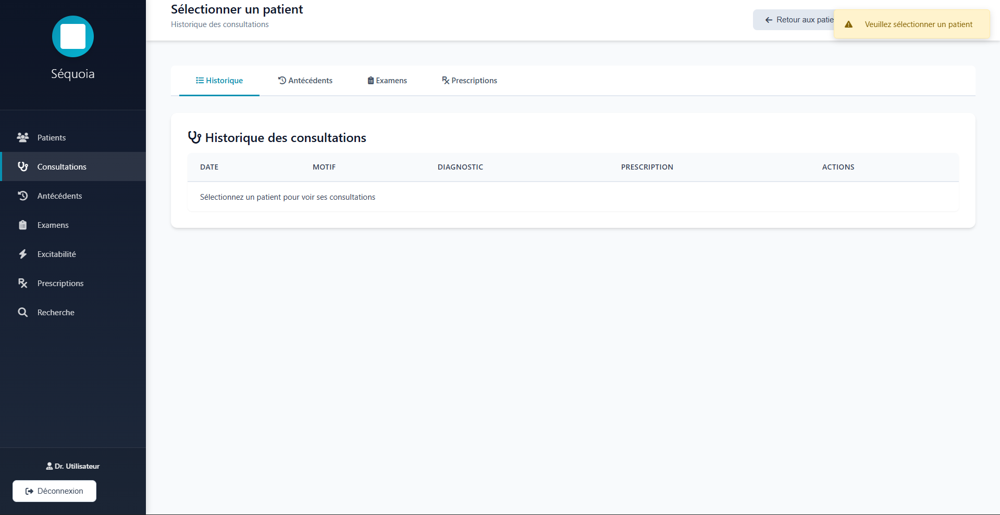
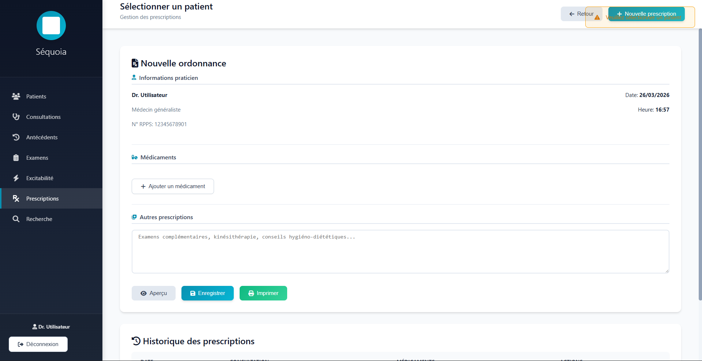
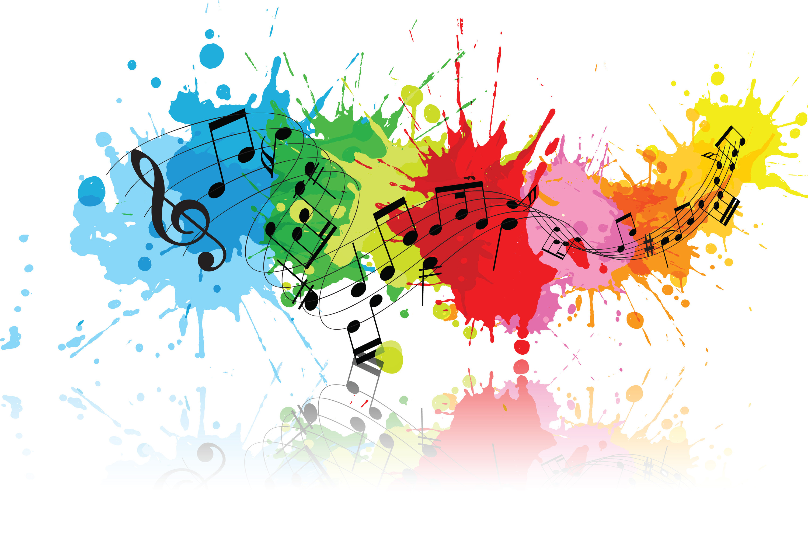
DIZ
Plateforme de streaming JPOP / JAZZ / RAP avec une identite visuelle forte et une experience d'ecoute immersive. Lecteur audio HTML5 custom, gestion de playlists dynamiques, interface responsive et deploiement Firebase.
Contexte
- Projet personnel — Portfolio academique
- Septembre — Novembre 2024
- Projet de groupe, 1 mois et demi
- Passion musique + challenge UI/UX
Hard Skills mobilises
- Animations CSS avancees et transitions
- Gestion de playlists JavaScript
- Deploiement Firebase Hosting
- Optimisation lazy loading medias
Resultats obtenus
- Plateforme deployee sur Firebase
- Chargement moyen 2.5s
- Design apprecie lors des presentations
- Interface responsive tous appareils
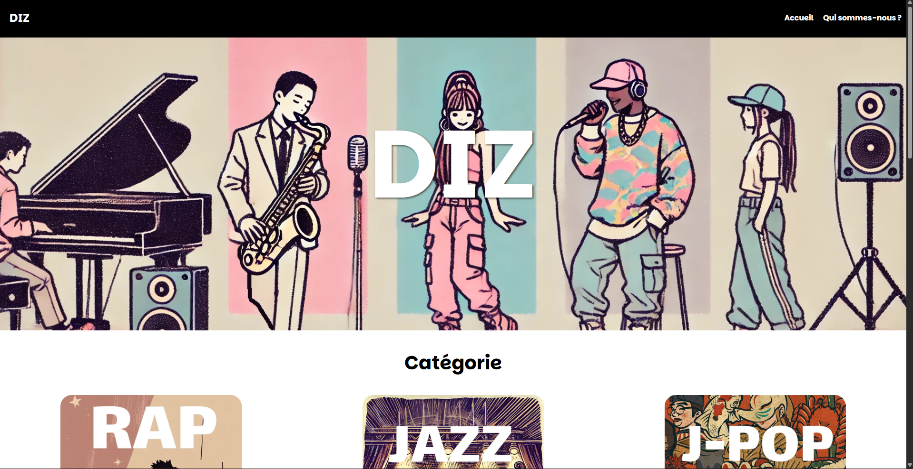
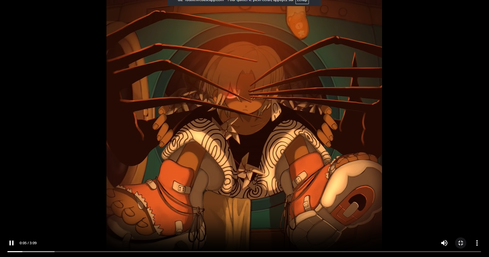
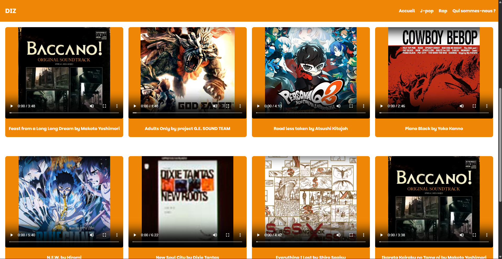

INSTINCT
Site vitrine complet pour restaurant avec menu interactif a filtres par categorie, systeme de reservation avec formulaire PHP, galerie photos responsive et optimisation SEO. Note 18/20.
Contexte
- Projet academique avec review formateur
- Avril 2025
- Projet de groupe
- Brief client fictif complet
Hard Skills mobilises
- Menu interactif avec filtres JS
- Formulaire de reservation PHP
- Optimisation SEO on-page
- Validation W3C sans erreurs
- Design elegant et responsive
Resultats obtenus
- Note : 16/20 au projet academique
- Formulaire de reservation mi-operationnel
- Code valide W3C
- Deploye sur Vercel
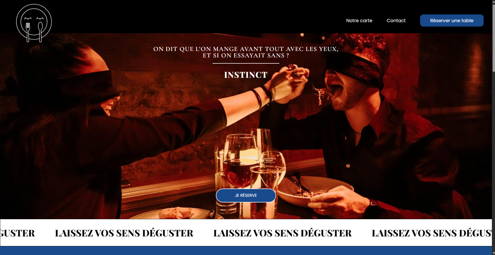
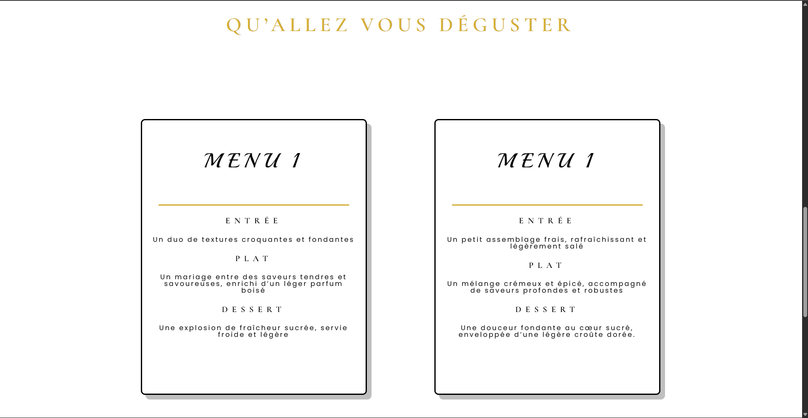
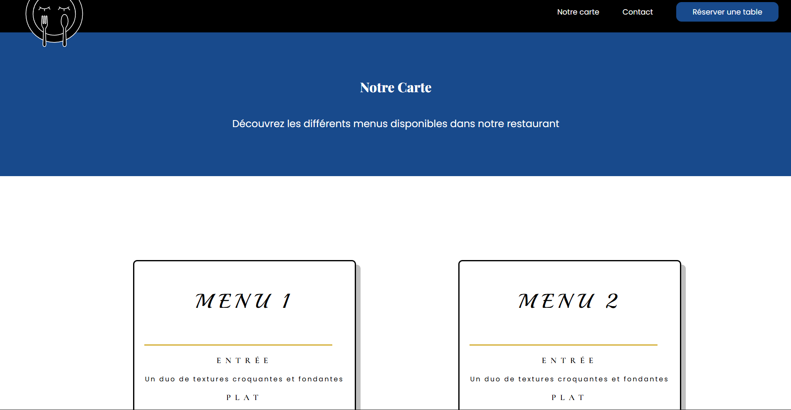
Convertisseur de Devises
Application de conversion de devises en temps reel integrant une API externe. 160+ devises disponibles, gestion complete des erreurs reseau, mise en cache et interface minimaliste deployee sur Vercel.
Contexte
- Exercice technique personnel
- Septembre 2024 — 2 semaines
- Maitrise des API externes et JS async
Hard Skills mobilises
- Fetch API et JavaScript asynchrone
- Gestion d'erreurs completes
- Mise en cache des resultats
- Interface mobile-first
Resultats obtenus
- 160+ devises disponibles
- Conversion en temps reel < 1.5s
- Gestion d'erreurs complete
- Deploye sur Vercel
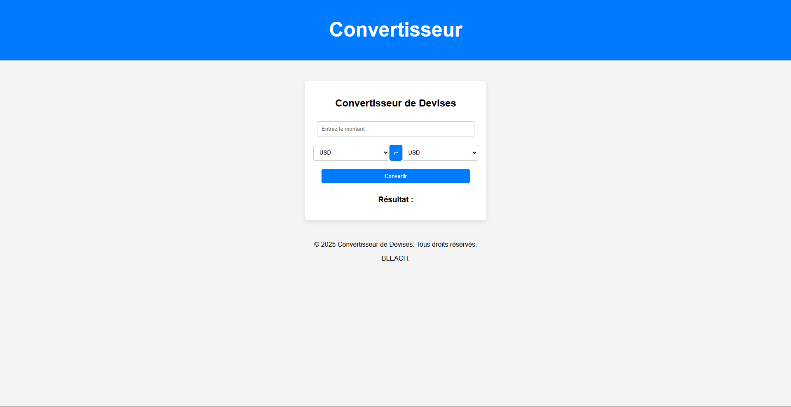
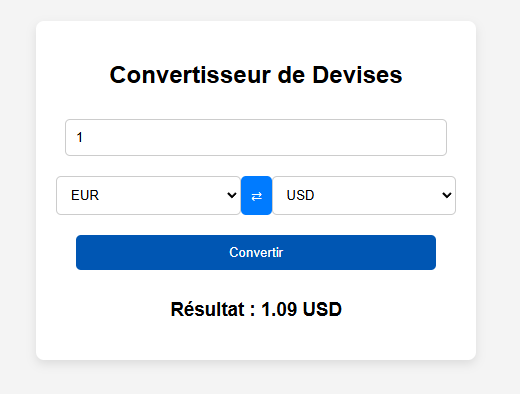